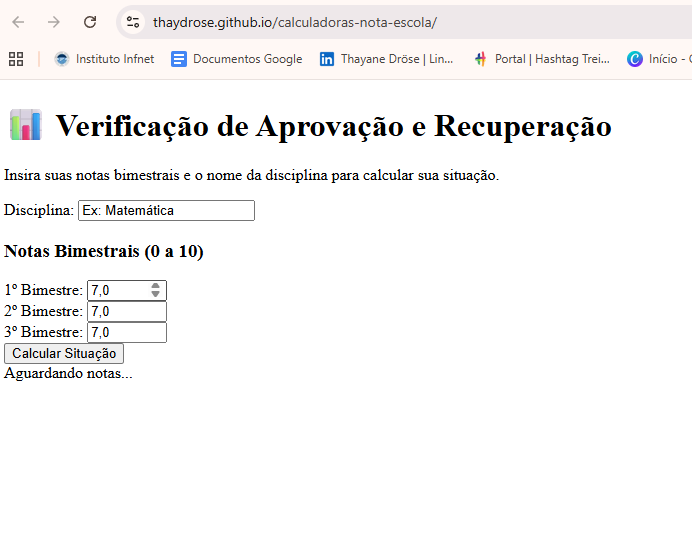
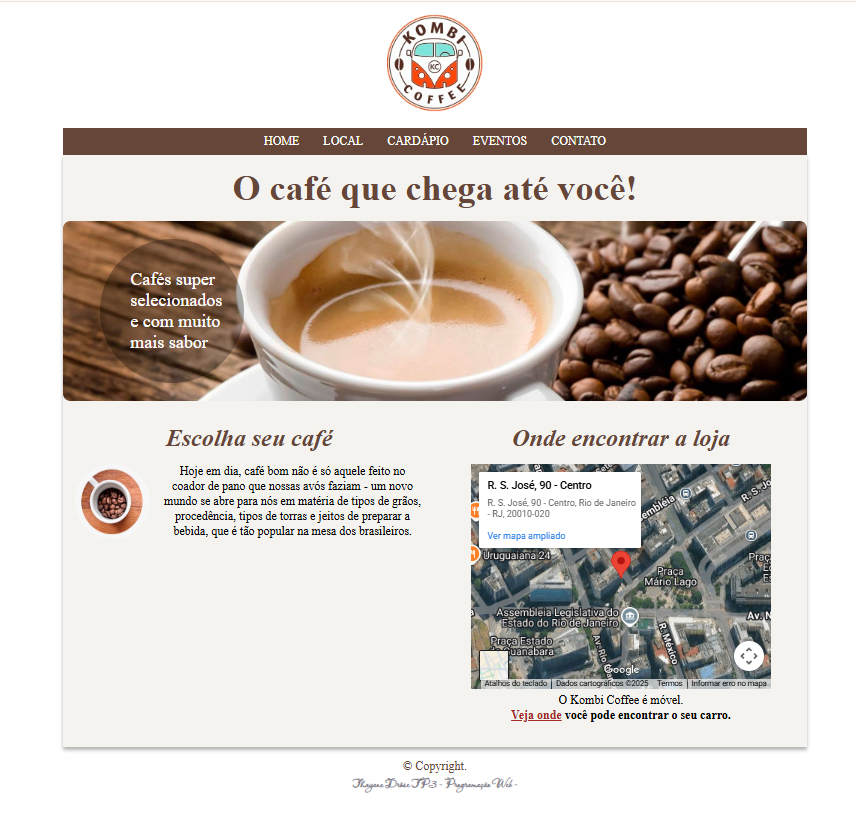

Resumo Profissional
Minha trajetória profissional reúne quase 20 anos de atuação em ambientes de alta complexidade na área da Saúde, integrando equipes multidisciplinares e lidando diariamente com cenários que exigiam raciocínio lógico, análise cuidadosa de informações, tomada de decisão sob pressão e gestão de crises.
Ao longo desse percurso, desenvolvi forte capacidade de observação sistêmica, pensamento crítico e organização mental para compreender problemas complexos, identificar padrões e agir de forma responsável mesmo em contextos de instabilidade e alto impacto humano.
Posteriormente, em uma experiência na gestão pública, ampliei essas competências ao atuar em funções estratégicas que exigiam negociação, análise de dados, interpretação de normas e legislação, além do acompanhamento de indicadores e campanhas institucionais.
Esse período foi fundamental para o desenvolvimento da autogestão, da comunicação estratégica e da capacidade de mediar interesses com foco em soluções sustentáveis e no bem-estar coletivo.
A transição para a área de Tecnologia representa a evolução natural desse conjunto de habilidades. Encontrei na Engenharia de Software, nos Dados e na Inteligência Artificial um campo onde o pensamento analítico, a lógica, a criatividade e a resiliência podem ser aplicados de forma estruturada, escalável e orientada à resolução de problemas complexos.
Atualmente, direciono meus estudos para arquitetura de sistemas, análise de dados e aprendizado de máquina, buscando construir soluções tecnológicas consistentes, éticas e alinhadas à tomada de decisão baseada em informação.
Hard Skills
- HTML5 – Semântica e Acessibilidade
- CSS3 – Flexbox | Grid | Responsivo
- JavaScript – ES6+
- Python – Básico
Soft Skills
- Comunicação eficaz e colaboração
- Resiliência e gestão emocional
- Raciocínio lógico e criativo
- Aprendizado contínuo
- Pensamento crítico e proatividade
Ferramentas & Idiomas
- Git & GitHub – em aprendizado
- Metodologias Ágeis (Scrum / Kanban)
- Inglês – Intermediário / Avançado
- Espanhol – Avançado / Fluente
Portfólio de Projetos
Calculadora de Notas
Desenvolvido para alunos do Ensino Médio da Rede COC. Esta calculadora Front-End determina a Média Anual (MA) e calcula a Nota Mínima Exata (RECANUAL) necessária para aprovação. Demonstra domínio de lógica JavaScript, HTML e CSS responsivo.
Kombi Coffee | Landing Page
Landing page fictícia desenvolvida para simular a presença online de uma cafeteria móvel. O foco foi na responsividade (Mobile First), utilizando CSS Flexbox e Media Queries. Demonstra domínio em HTML Semântico e aplicação de design alinhado ao branding.
Movie Card

Componente Front-End estático (Movie Card) simulando uma interface de streaming. Demonstra domínio em layouts complexos e detalhados com CSS, uso de ícones externos e organização semântica para dados de resumo e elenco.
Histórico Acadêmico
Instituto Infnet
Engenharia de Software com ênfase em Dados e IA
Outubro/2025 - Em Andamento
Formação completa em Engenharia de Software com forte ênfase em Ciência de Dados e Inteligência Artificial. O currículo abrange desde os fundamentos sólidos de Estruturas de Dados e Algoritmos e desenvolvimento Full Stack, até disciplinas avançadas de Machine Learning, Deep Learning e Big Data. O foco está na criação de soluções de software robustas e escaláveis, utilizando o ciclo de vida completo do desenvolvimento, com alta aplicação prática em projetos de IA.
Universidad Catolica del Uruguay
Graduação em Enfermagem
Fevereiro/2007 - Dezembro/2011
Formação que me proporcionou uma base robusta em pensamento crítico, resolução de problemas complexos e análise de dados em cenários de alta pressão. Desenvolvi uma forte capacidade de observação e diagnóstico, habilidades que hoje aplico para entender requisitos de sistemas e analisar conjuntos de dados.
Instituto Educacional Dimensão
Curso Técnico de Enfermagem
Fevereiro/2002 - Janeiro/2005
Formação técnica fundamental que me proporcionou uma base sólida em protocolos de sistemas, análise de cenários complexos e, acima de tudo, uma profunda compreensão do fator humano.